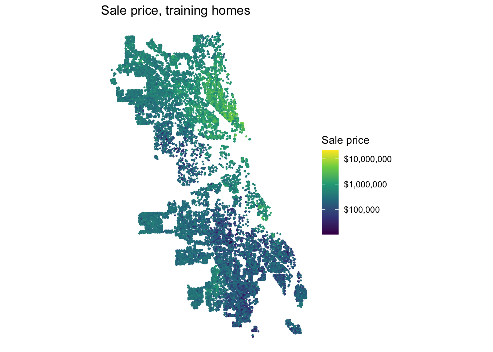
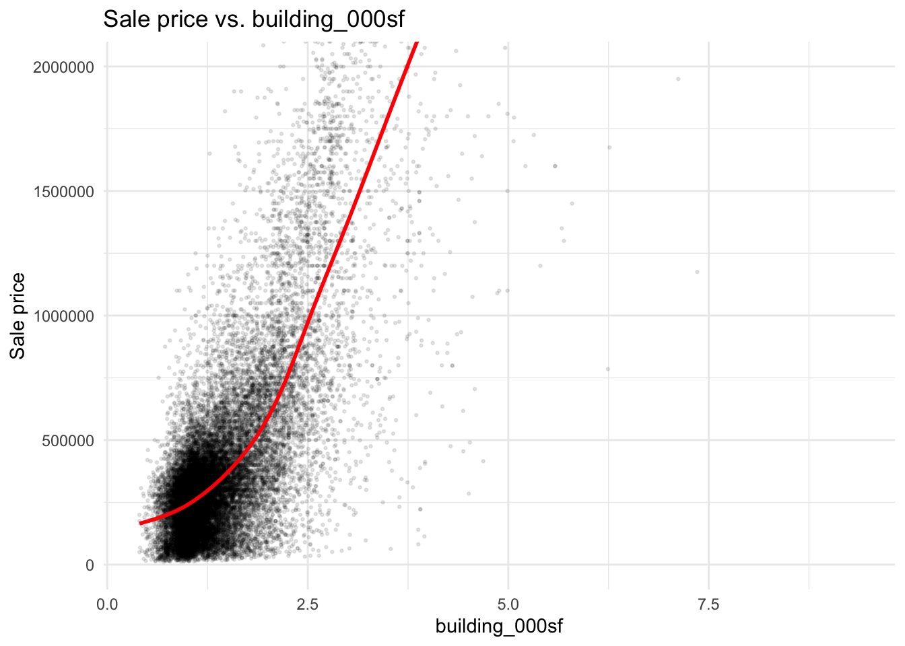
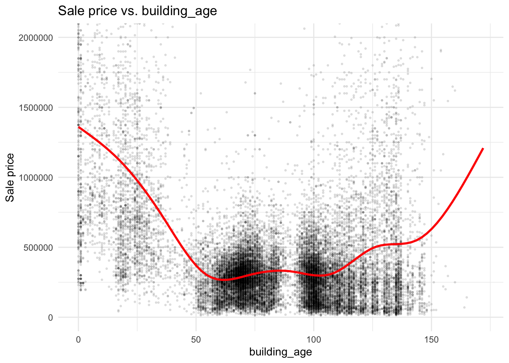
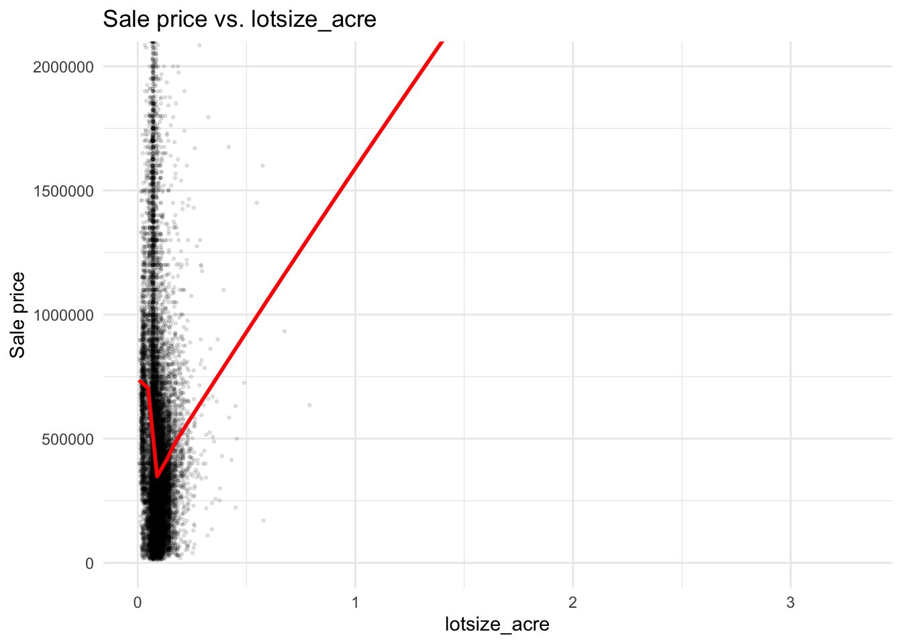
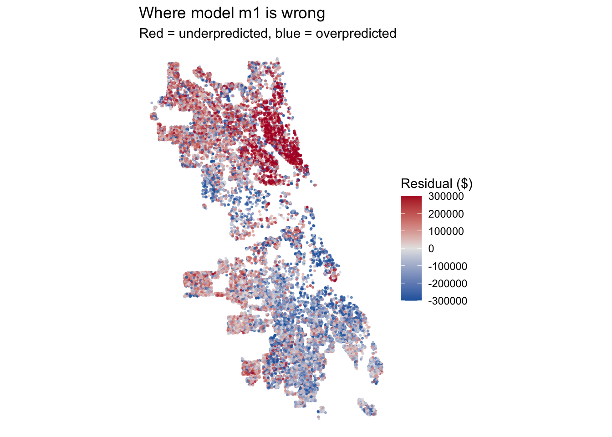
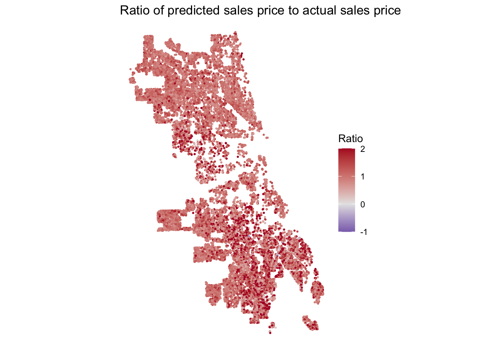
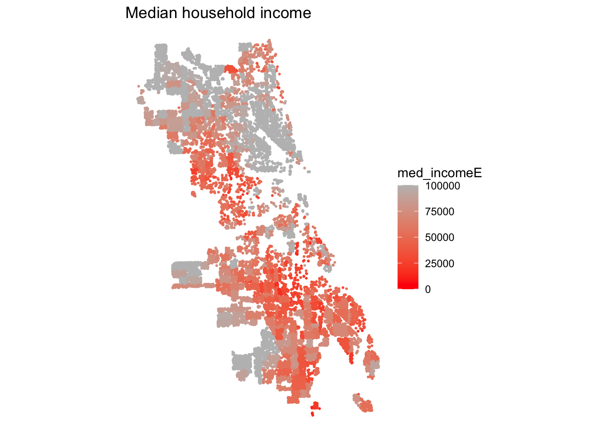

In class we built a house price model for Philadelphia. Now your team does it for a city you haven’t modeled: Chicago.
The Cook County Assessor’s Office has to value every home in the county, including the vast majority that didn’t sell this year. Assessments drive property tax bills. When they’re wrong in a systematic way, some households pay more than their share. A 2017 Chicago Tribune investigation, “The Tax Divide,” found exactly that in Cook County: lower-value homes were assessed at higher shares of their worth than expensive ones.
Build a model that predicts single-family sale prices in Chicago, 2023–2025, using only the tools from this course. The file contains only features of the house itself. Everything about location is yours to build.
A real test
File
What’s in it
chicago_train.csv
About 80% of the houses, with sale prices
chicago_test.csv
The other 20%, without sale prices. You predict them; we score you.
The test houses were held out by house, not by sale, so a house that sold twice is entirely on one side. Your CV RMSE is your estimate. Your test RMSE is the truth. If they’re far apart, something leaked.
Due: Friday, October 30. All teammates renders the file on their portfolio and every member submits that link on Canvas. One teammate uploads team_XX_predictions.csv.
Individual accountability: Q7 on October 30 asks each of you about this model: which features you used and why, your CV and test RMSE, and where the model fails worst. Make sure everyone can explain all of it.
Rules
1. Clean training rows once, in Part 1. Never drop test rows.
You must predict every test house, so fill NAs in a feature rather than filtering.
2. Stay inside the time window
Open data from 2023–2025 only.
3. No leakage
Nothing built from sale prices. Would the Assessor have this number for a house that didn’t sell?
4. The outcome stays in dollars
Transform predictors, not sale_price.
5. No prices from the test fold or the future
No features built from other houses’ sale prices.
Please include in your final rendered qmd for this assignment:
Model log
Every model you tried, in order, with CV RMSE and Moran’s I. Each row has a note saying why you tried it.
Features
Incorporate the feature engineering tricks - including the spatial ones covered these past few weeks.
Diagnostics
Residual maps for your baseline and final model, and what changed.
Error analysis
Where your final model fails worst, and whose homes it over-values (Part 4).
Reasoning
Choices justified by evidence from your own analysis.
Part 0: Setup (provided)
These helpers are to help you get off the ground.
Load both files together (provided)
Build every feature on all_sales, so training and test houses get identical features. Split off train again whenever you add something.
Useful sources: the Chicago Data Portal (find a dataset’s ID under its API button), the Census via tidycensus, and Cook County’s open data.
Part 1: Clean and explore
Decide which training sales are market sales. Record each rule, why, and how many it removed. Then explore: at least four plots, including a map of price.
In building our model, we only included homes price/sqft below the 0.1st percentile ($11.70/sqft). Extreme values below this cutoff point appeared to be off-market sales; a lot of larger homes sold for less than expected under ~ $15/sqft, which suggested they weren’t representative/good training observations. We removed 24 training observations due to this reason. On the other end of the spectrum, we removed homes where price/sqft was above the 99.9th percentile ($1300/sqft). Extreme values above this cutoff point were mostly multi-parcel sales which seemed to reflect the price of the full sale vs. the individual home (e.g., $21.8 million on a 2000 square foot house). This removed 24 training observations.
Lastly, one sale had no census tract match because it was located outside of ACS tract boundaries and had no associated ACS values. Because of this, we removed 1 training observation.
In total, we removed 49 observations. We used price/sqft to try to normalize the metric across home sizes/types. A lot of very expensive (high price/sqft) homes at the high end seemed to be actual sales, possibly more historic homes in more expensive parts of the city.
The four plots will be displayed below the variable data cleaning code.
Base dataset cleaning
Code
# -----------------------------------------------------------------------# Check NAs# pull training set out, drop geomtrain <- all_sales %>%filter(split =="train") %>%st_drop_geometry()# pull test set out, drop geomtest <- all_sales %>%filter(split =="test") %>%st_drop_geometry()sales <-rbind(train, test) # full df, no geomall_geom <- all_sales %>%select(id, geometry) # save geometries to merge back# -----------------------------------------------------------------------# check for NAs across full dfna_cols <-c()for (column innames(sales)) {if (any(is.na(sales[,column]))) { na_cols <-c(na_cols, column) }}na_cols # can see all have actual 0s so not same as NA
# dropping price from consideration here since NAs are from testna_cols <- na_cols[na_cols !="sale_price"] # check counts of missingness in both dfsfor (column in na_cols) { n_train <-sum(is.na(train[,column])) n_test <-sum(is.na(test[,column]))cat(column, ": ", n_train, " train, ", n_test, " test\n", sep ="")}
lotsize_acre: 1 train, 0 test
num_half_baths: 38 train, 7 test
num_fireplaces: 349 train, 63 test
garage_size: 11 train, 5 test
full_basement: 2 train, 0 test
warmairfurnace: 7 train, 2 test
Code
# -----------------------------------------------------------------------# compare missing to non-missing homes# looking at how medians of other covariates differna_exam <-data.frame()for (column in na_cols) { is_missing <-is.na(train[[column]]) row <-data.frame( # build rows of median valuescolumn = column,n_missing =sum(is_missing),age_missing =median(train$building_age[is_missing]),age_present =median(train$building_age[!is_missing]),sqft_missing =median(train$building_000sf[is_missing]),sqft_present =median(train$building_000sf[!is_missing]),price_missing =median(train$sale_price[is_missing]),price_present =median(train$sale_price[!is_missing]) ) na_exam <-bind_rows(na_exam, row)}na_exam
For 4 of the 6 variables with missingness in the training set median age appears to be significantly lower than the median age of homes where the values are present. It might be the case that newer homes haven’t had the data properly collected/listed yet. num_fireplaces and num_half_baths have the highest n missing and both have this issue - so will fill with median values. We will do the same for garage_size and full_basement even tho relationship is less explainable. but only 13 NAs in training set across both.
Code
# -----------------------------------------------------------------------# fill NAs, using the training data to calc median valuefor (column in na_cols) { is_missing <-is.na(sales[[column]]) # index rows w/ NAs fill_med <-median(train[[column]], na.rm =TRUE) # get median for var sales[[column]][is_missing] <- fill_med # fill NAs w/ med}
Code
# -----------------------------------------------------------------------# now look into outcome outliers#re-write test and train w/ adjusted sales dftest <- sales %>%filter(split =="test")train <- sales %>%filter(split =="train")# sale price distquantile(train$sale_price, probs =c(0, 0.001, 0.01, 0.05, 0.5, 0.95, 0.99, 0.999, 1))
# ------------------# drop outliers using price_sqft# choosing to drop obs outside of 0.1 and 99.9 pctiles of price/square ftsales$price_sqft <- sales$sale_price / (sales$building_000sf *1000)# merge geom back in for plottrain <- train %>%left_join(., all_geom, by ="id") %>%st_as_sf()ggplot(train) +geom_sf(aes(color = sale_price), size =0.3) +scale_color_viridis_c(trans ="log10", labels = scales::dollar) +labs(title ="Sale price, training homes", color ="Sale price") +theme_void()

Code
sales <- sales %>%filter(split =="test"|# don't drop any test price_sqft > cutoffs["0.1%"] & price_sqft < cutoffs["99.9%"]) %>%select(-price_sqft)nrow(sales) -nrow(all_sales)
[1] -48
Code
#
We dropped 48 homes from train set for unrealistic price per sqft
Code
# -----------------------------------------------------------------------# Year + quarter factor varsales$year_qtr <-factor(paste0(sales$year, "Q", sales$sale_qrt))table(sales$year_qtr)
# Square footage relative to lot size - big yard or giant/tall building# Googled for acre -> sqft conversionsales$sqft_lot_ratio <- (sales$building_000sf*1000) / (sales$lotsize_acre*43560)# Age of house flagsales$new <-as.integer(sales$building_age <=10)sales$old <-as.integer(sales$building_age >=100)train <- sales %>%filter(split =="train") #resavetest <- sales %>%filter(split =="test")
Code
# -----------------------------------------------------------------------train_df <-st_drop_geometry(train)#summary(train_df)cont_vars <-c("building_000sf", "building_age", "lotsize_acre")for (var in cont_vars) { p <-ggplot(train_df, aes(x = .data[[var]], y = sale_price)) +geom_point(alpha =0.1, size =0.5) +geom_smooth(se =FALSE, color ="red") +coord_cartesian(ylim =c(0, 2000000)) +# googledlabs(title =paste("Sale price vs.", var), x = var, y ="Sale price") +theme_minimal()print(p)}



Add ACS variables
Code
# -----------------------------------------------------------------------tracts <- tracts %>%mutate(pct_owner = owned_hhE / total_hhE,pct_coll = (baE + maE + profE + phdE) / pop_25upE,pct_poverty = pov_numE / pov_popE,pct_vacant = vacant_unitsE / total_unitsE,pop_density = total_popE /as.numeric(st_area(geometry)) *5280^2, # ppl per sq milepct_no_vehicle = no_vehicleE / vehicle_hhE ) %>%select(GEOID, med_incomeE, pct_owner, pct_coll, pct_poverty, pct_vacant, pop_density, pct_no_vehicle)# ADDED# knn2nb below threw error for missing tract info# googled for this code to remove it -- apparently it's lake Michigan:sum(st_is_empty(tracts))
[1] 1
Code
tracts <- tracts[!st_is_empty(tracts), ]
There are 240 tracts missing in the median income estmate so we need to fill it in. Use knn tracts to impute the median.
Code
# -----------------------------------------------------------------------# Check for NA tractsacs_cols <-c("med_incomeE", "pct_owner", "pct_coll","pct_poverty", "pct_vacant", "pop_density","pct_no_vehicle")for (column in acs_cols) {cat(column, ": ", sum(is.na(tracts[[column]])), " tracts\n", sep ="")}
# -----------------------------------------------------------------------# Fill NA tracts w/ 5 knn tracts' avg values# for "med_incomeE", "pct_owner", "pct_coll", "pct_poverty", "pct_vacant"tract_pts <-st_point_on_surface(tracts) # one point per tractcoords <-st_coordinates(tract_pts) # get x/y coords#knn2nbknn <-knn2nb(knearneigh(coords, k =5)) # find 5 nearest tracts for each# loop thru cols w/ missing and fill values w/ median of nearestfor (column in acs_cols) { vals <- tracts[[column]] # save vector of ACS column's valuesfor (i inwhich(is.na(vals))) { # any NA rows (tracts) in this column# assign mean of their 5 nearest tract neighbors# unless a neighbor is NA then rm tracts[[column]][i] <-mean(vals[knn[[i]]], na.rm = T) }}# check for NAs againfor (column in acs_cols) {cat(column, ": ", sum(is.na(tracts[[column]])), " tracts\n", sep ="")}
# -----------------------------------------------------------------------# merge geoms + ACS back into reduced sales df sales <- sales %>%left_join(., all_geom, by ="id") %>%st_as_sf() # convert back to shape formatsales <-st_join(sales, tracts, join = st_within) # house -> tract if falls w/in# check for NAs herefor (column in acs_cols) { n_train <-sum(is.na(sales[[column]][sales$split =="train"])) n_test <-sum(is.na(sales[[column]][sales$split =="test"]))cat(column, ": ", n_train, " train, ", n_test, " test\n", sep ="")}
med_incomeE: 1 train, 0 test
pct_owner: 1 train, 0 test
pct_coll: 1 train, 0 test
pct_poverty: 1 train, 0 test
pct_vacant: 1 train, 0 test
pop_density: 1 train, 0 test
pct_no_vehicle: 1 train, 0 test
Code
# one train house didn't match to a tract - dropsales <- sales %>%filter(!is.na(GEOID))
We dropped one house from training set because it didn’t match to any ACS tract.
Code
# crimes etc. might need filtering using socrata_get ^^ SQL commands# -----------------------------------------------------------------------# neighborhood# read neighborhood boundsnbhds <-st_read("https://data.cityofchicago.org/api/v3/views/y6yq-dbs2/query.geojson")
Reading layer `query' from data source
`https://data.cityofchicago.org/api/v3/views/y6yq-dbs2/query.geojson'
using driver `GeoJSON'
Simple feature collection with 98 features and 8 fields
Geometry type: MULTIPOLYGON
Dimension: XY
Bounding box: xmin: -87.94011 ymin: 41.64454 xmax: -87.52414 ymax: 42.02304
Geodetic CRS: WGS 84
Code
# summary(nbhds)#st_crs(nbhds)# transform + select neighborhood name + geomnbhds <- nbhds %>%st_transform(3435) %>%select(pri_neigh)# merge each sale to its nieghborhoodsales <-st_join(sales, nbhds, join = st_within)# check missingfor (grp inc("train", "test")) {cat(grp, ": ", sum(is.na(sales$pri_neigh[sales$split == grp])), " missing\n")} # 24 train, 7 test
train : 24 missing
test : 7 missing
There are 24 observations from train and 7 observations from test missing.
Code
# -----------------------------------------------------------------------# for each sale w/ NA neihgborhood, find nearest + assignnearest_idx <-st_nearest_feature(sales[is.na(sales$pri_neigh), ], nbhds)sales$pri_neigh[is.na(sales$pri_neigh)] <- nbhds$pri_neigh[nearest_idx]# see if some neighborhoods are really smallnbhd_counts <- sales %>%st_drop_geometry() %>%count(pri_neigh, split) %>%pivot_wider(names_from = split, values_from = n, values_fill =0) %>%arrange(train)head(nbhd_counts, 15)
# A tibble: 15 × 3
pri_neigh test train
<chr> <int> <int>
1 Boystown 1 0
2 Streeterville 2 6
3 East Village 3 8
4 Rush & Division 1 13
5 United Center 4 14
6 Armour Square 5 15
7 Washington Park 3 15
8 Oakland 4 17
9 Chinatown 7 20
10 Fuller Park 3 20
11 Ukrainian Village 9 24
12 Andersonville 7 29
13 Wrigleyville 3 30
14 River North 6 38
15 Douglas 20 40
Code
# some neighborhoods have no/minimal training obs# merge these their nearest neighborhood instead
The small neighborhoods won’t have enough training info to produce reliable predictions in test set. We need to aggregate to larger neighborhoods.
Code
# -----------------------------------------------------------------------# join neighborhoods w/ their countsnbhds <-left_join(nbhds, nbhd_counts, by ="pri_neigh")# overwrite NAs (failed join) which mean zero sales in datasetsnbhds$train[is.na(nbhds$train)] <-0nbhds$test[is.na(nbhds$test)] <-0# locate small vs. larger neighborhoods (re-assigning small to larger)small_nbhds <- nbhds[nbhds$train <20,]big_nbhds <- nbhds[nbhds$train >=20,]# find nearest larger neighborhoodsmall_pts <-st_point_on_surface(small_nbhds)nearest_big <-st_nearest_feature(small_pts, big_nbhds)# -----------------------------------------------------------------------# create new var w/ aggregated neighborhoodsnbhds$nbhd_group <- nbhds$pri_neighnbhds$nbhd_group[nbhds$pri_neigh %in% small_nbhds$pri_neigh] <- big_nbhds$pri_neigh[nearest_big]sum(is.na(nbhds$nbhd_group)) # 0
[1] 0
Code
# add new var back into sales dfsales <-left_join(sales, st_drop_geometry(nbhds) %>%select(pri_neigh, nbhd_group),by ="pri_neigh")
We created new variable nbhd_group for any houses (train + test) that fell in neighborhoods with < 20 training observations. This will shift their assigned neighborhood to the nearest neighborhood with n train >=20.
Code
# -----------------------------------------------------------------------# Dist to center of Loop neighborhoodloop_pt <- nbhds %>%filter(pri_neigh =="Loop") %>%st_point_on_surface()# calculate distance in mi for each home salesales$dist_loop_mi <-as.numeric(st_distance(sales, loop_pt)) /5280#summary(sales$dist_loop_mi) # 0 - 20, no NAs# -----------------------------------------------------------------------# Dist to L stationl_stops <-socrata_get("8pix-ypme", where ="map_id IS NOT NULL") %>%st_transform(3435)l_stations <- l_stops %>%distinct(map_id, .keep_all =TRUE) # 145 stationsnearest_l <-st_nearest_feature(sales, l_stations)sales$dist_l_mi <-as.numeric(st_distance(sales, l_stations[nearest_l, ], by_element =TRUE)) /5280# -----------------------------------------------------------------------# Dist to Lake Michiganlakes <-st_read("https://data.cityofchicago.org/api/v3/views/knfe-65pw/query.geojson",quiet =TRUE)lake_michigan <- lakes %>%filter(name =="LAKE MICHIGAN") %>%st_union() %>%st_make_valid() %>%st_transform(3435)sales$dist_lake_mi <-as.numeric(st_distance(sales, lake_michigan)) /5280summary(sales$dist_lake_mi)
Min. 1st Qu. Median Mean 3rd Qu. Max.
0.03317 2.70533 5.08328 4.90290 6.83577 10.90723
Code
# -----------------------------------------------------------------------# Dist to school 2023-2024schools <-socrata_get("mv87-m4mi", where ="1=1") %>%st_transform(3435)nearest_school <-st_nearest_feature(sales, schools)sales$dist_school_mi <-as.numeric(st_distance(sales, schools[nearest_school, ], by_element =TRUE)) /5280summary(sales$dist_school_mi)
Min. 1st Qu. Median Mean 3rd Qu. Max.
0.01415 0.16690 0.24903 0.26848 0.34907 1.20973
# -----------------------------------------------------------------------# Violent crimes KNNviolent <-socrata_get("ijzp-q8t2",where ="date >= '2023-01-01' AND date < '2026-01-01' AND primary_type IN ('HOMICIDE', 'ROBBERY')") %>%filter(!st_is_empty(.)) %>%st_transform(3435)nrow(violent)
[1] 27549
Code
sales$violent_knn5 <-sapply(st_nn(sales, violent, k =5, returnDist =TRUE, progress =FALSE)$dist, mean)# -----------------------------------------------------------------------# Vacant buildings buffer countoptions(timeout =600) # googled for this after time out issuevacant <-socrata_get("v6vf-nfxy",where ="created_date >= '2023-01-01' AND created_date < '2026-01-01' AND sr_type = 'Vacant/Abandoned Building Complaint'") %>%st_transform(3435)nrow(vacant)
What in your exploration shaped your modeling choices?
Our exploration showed that sale prices depend on property characteristics and location. We included relationships between sale price and building size, age, and lot size. To account for nonlinear relationships, we tested a squared building-size term. Some property characteristics had missing values and so we filled in the missing values with the median of all of the values. We quickly found out that prices differ between neighborhoods. So, we decided to include neighborhood and census tract variables (ex. income, poverty, homeownership). Some neighborhoods had few sales and so we combined them with nearby, larger neighborhoods. We tried out different spatial variables to see if they would create any improvements (ex. Distance to transit stops, distance to schools, etc.). To see whether neighborhood conditions helped explain sale prices we included nearby violent crime and vacant building complaints. Overall there was much trial and error that went into testing characteristics we believed could improve the model.
Part 2: Build the model
Start with a structure-only baseline. Then add features in steps you can learn from, logging each one. Keep the log in a tibble with columns model, added, cv_rmse, moran_i, notes.
Code
# -----------------------------------------------------------------------sales <-st_as_sf(sales) # resave as sftrain <- sales %>%filter(split =="train") #resavetest <- sales %>%filter(split =="test")# MODEL 1f_baseline <- sale_price ~ building_000sf + building_age + lotsize_acre + num_bedrooms + num_full_baths + num_half_baths + num_fireplaces + garage_size + central_air + one_story + full_basement + finished_basement + brick_stone_ext + warmairfurnace + is_multisalemodel_log <-add_entry(f_baseline, train, "m1", "baseline model", "sales df features, no transformation")#plot_resid(formula = f_baseline, model = "m1")# MODEL 2f_m2 <- sale_price ~ building_000sf +I(building_000sf^2) + building_age +I(building_age^2) +log(lotsize_acre) + num_bedrooms + num_full_baths + num_half_baths + num_fireplaces + garage_size + central_air + one_story + full_basement + finished_basement + brick_stone_ext + warmairfurnace + is_multisale# -16k RMSEmodel_log <-add_entry(f_m2, train, "m2", "sqft^2, age^2, log(lot size)", "basic transformations of sales df features based on EDA")# MODEL 3# GOOGLED for this update() functionf_m3 <-update(f_m2, . ~ . + year_qtr)# -1k RMSEmodel_log <-add_entry(f_m3, train, "m3", "year_qtr", "sales price seasonality")# MODEL 4f_m4 <-update(f_m3, . ~ . + sqft_lot_ratio + new + old)# -0.5k RMSEmodel_log <-add_entry(f_m4, train, "m4", "sqft_lot_ratio, new and old (house age flags)", "richer house features built from existing data")# Moran's I increasing meaning spatial effects getting stronger# -----------------------------------------------------------------------# + Spatial vars# ACS# MODEL 5f_m5 <-update(f_m4, . ~ . + med_incomeE + pct_owner + pct_coll + pct_poverty + pct_vacant + pop_density)# -47k, Moran's I decreasedmodel_log <-add_entry(f_m5, train, "m5", "ACS vars: income, owner occ, college, poverty, vacancy, pop density", "neighborhood traits since Moran's I rising: spatial fx")# MODEL 6# Neighborhood fixed effectsf_m6 <-update(f_m5, . ~ . +factor(nbhd_group))# -25k, Moran's I decreased furthermodel_log <-add_entry(f_m6, train, "m6", "Neighborhood FE", "Captures other nbhd qualities not found in ACS vars")# MODEL 7# Dist to center cityf_m7 <-update(f_m6, . ~ . + dist_loop_mi)# almost no effects since neighborhood FE should already basically do thismodel_log <-add_entry(f_m7, train, "m7", "Distance from center city", "Will drop since captured by m6 FE")# MODEL 8# Remove distance from Loop neighborhood# Add interaction btwn square footage and neighborhood# googled for update() subtraction f_m8 <-update(f_m7, . ~ . - dist_loop_mi + building_000sf:factor(nbhd_group))# -20k RMSEmodel_log <-add_entry(f_m8, train, "m8", "interaction term: sqft x neighborhood", "Price per square foot by the neighborhood")# visualize errors to see what else could helpplot_resid(formula = f_baseline, model ="m1")
# -----------------------------------------------------------------------# MODEL 9# CTA distancef_m9 <-update(f_m8, . ~ . +log(dist_l_mi))model_log <-add_entry(f_m9, train, "m9", "log dist to nearest L station","transit accessibility")# good but very minimal impact on RMSE or Moran's I# MODEL 10: lake distance - Talyahf_m10 <-update(f_m9, . ~ . +log(dist_lake_mi +0.1))model_log <-add_entry(f_m10, train, "m10", "log dist to Lake Michigan","m8 residuals concentrated near north of lake")# -340 RMSE, - 0.003 Moran's I# MODEL 11: school distance - Mayaf_m11 <-update(f_m9, . ~ . +log(dist_school_mi +0.05))model_log <-add_entry(f_m11, train, "m11", "log dist to nearest CPS school","amenity that varies within neighborhoods")# basically 0 effect# MODEL 12: no-vehicle households - Yuqif_m12 <-update(f_m10, . ~ . + pct_no_vehicle)model_log <-add_entry(f_m12, train, "m12", "% households without a vehicle","transit dependence")# basically 0 effect# MODEL 10 is best - dist to lake# check if any vars seem unhelpful -- not signif at 0.05#coefs_m10 <- summary(lm(f_m10, train))$coefficients#coefs_m10[coefs_m10[, "Pr(>|t|)"] > 0.05, ]# Pr(>|t|)# num_bedrooms 0.64489233# central_air 0.16811059# brick_stone_ext 0.06889885# warmairfurnace 0.12626747# year_qtr2023Q4 0.05246317# pct_vacant 0.19870281# pop_density 0.43146422# MODEL 12: Try dropping predictors# ignore pct_poverty since 0.06 is right on edge of signif# ignor year_qtr2023Q4 since it's one level of a factorf_m13 <-update(f_m10, . ~ . - num_bedrooms - central_air - brick_stone_ext - warmairfurnace - pct_vacant - pop_density)model_log <-add_entry(f_m13, train, "m13", "dropped 6 predictors from m10","insignificant in lin reg, might not be helping preds")
Code
# -----------------------------------------------------------------------# MODEL 14# Violent crime, 5 NN mean distancef_m14 <-update(f_m13, . ~ . +log(violent_knn5))model_log <-add_entry(f_m14, train, "m14","log mean dist to 5 nearest homicides/robberies","house/block disamenities, more granular")# MODEL 15# Count of vacant building complaints within 660 feetf_m15 <-update(f_m14, . ~ . +log(vacant_660ft +1))model_log <-add_entry(f_m15, train, "m15","log(1 + vacant building complaints within 660 ft)","house/block disamenities, more granular")# doesn't really add anything meaningful to RMSE on top of crimes knn# but does decrease Moran's I a bit
Part 3: Final model
Show your final model, the model log, and baseline vs. final residual maps.
Code
f_final <- f_m15model_log
# A tibble: 15 × 5
model added cv_rmse moran_i notes
<chr> <chr> <dbl> <dbl> <chr>
1 m1 baseline model 291320. 0.398 sale…
2 m2 sqft^2, age^2, log(lot size) 275125. 0.411 basi…
3 m3 year_qtr 274142. 0.413 sale…
4 m4 sqft_lot_ratio, new and old (house age flags) 273615. 0.414 rich…
5 m5 ACS vars: income, owner occ, college, poverty, v… 226230. 0.352 neig…
6 m6 Neighborhood FE 201403. 0.215 Capt…
7 m7 Distance from center city 201221. 0.214 Will…
8 m8 interaction term: sqft x neighborhood 181489. 0.171 Pric…
9 m9 log dist to nearest L station 181439. 0.170 tran…
10 m10 log dist to Lake Michigan 181100. 0.167 m8 r…
11 m11 log dist to nearest CPS school 181432. 0.170 amen…
12 m12 % households without a vehicle 181105. 0.167 tran…
13 m13 dropped 6 predictors from m10 181046. 0.168 insi…
14 m14 log mean dist to 5 nearest homicides/robberies 180948. 0.167 hous…
15 m15 log(1 + vacant building complaints within 660 ft) 180925. 0.167 hous…
Code
plot_resid(formula = f_baseline, model ="m1")

Code
plot_resid(formula = f_final, model ="final_model")
What helped most, and what disappointed you? Use your log.
The most helpful improvements came from ACS socioeconomic variables, neighborhood fixed effects, and interaction between building size and neighborhood.
Adding ACS variables reduced RMSE by $47,385, neighborhood fixed effects reduced it by $24,827 and lowered Moran’s I from 0.3523 to 0.2149. The interaction between building area and neighborhood also made a big difference by reducing RMSE by $19,732.
Some features were less helpful than expected. Nearest CTA stations only improved RMSE by $50, and the distance to nearest school and the percentage of households without vehicles had almost no effect. Distance to Lake Michigan slightly improved RMSE and Moran’s I.
Our residual maps show a clear improvement from the baseline to the final model. The baseline has noticeable spatial clustering of under-predictions in parts of northern Chicago and over-predictions in southern Chicago. These patterns show less in the final model.
Overall, our final model M15 achieved the lowest CV RMSE of $180,925, compared to the $291,320 from baseline. It shows a 37.9% reduction and Moran’s I also decreased from 0.3983 to 0.1667.
Part 4: Where it fails, and who pays
Where does your final model fail worst? Is it guessing too high or too low there, and why do you think so?
Based on the plots above, the model fails the most in the southern part of Chicago, specifically Roseland and South Shore. There are not uniform patterns of guessing too high or too low, rather there is a mix of patterns of overprediction and underprediction. This could be attributed to the fact that there are variables that move in conflicting directions within this region. For example, while the southern part of Chicago may have lower income rates and higher vacancy rates compared to the rest of the city, it is also closer to the lake, the loop, schools, and may have higher amounts of college-educated individuals due to proximity to universities. Thus, because of these conflicting indicators of home price coexisting in one area it may lead to more extreme over- or under-predictions that cannot be uniformly accounted for.
Assessors judge their work with the ratio of predicted value to sale price. A ratio above 1 means the home is over-valued and its owner over-taxed. Does your model’s ratio differ by neighborhood income? Connect your answer to your Part 1 cleaning rules and to “The Tax Divide.”
Based on the ratio of predicted values to sale prices, it seems that homes in the south part of Chicago are over-valued and their owners are over-taxed in comparison to other areas, possibly in part due to the reasons described above. In the initial cleaning stages of our model creation we removed homes that were above the 99.9th percentile in sales price and homes that were below the 0.1th percentile in sales price. This translates to homes that are relatively higher in sales price being under-predicted and homes that are relatively lower in sales prices being over-predicted due to the constrained range of training data. Furthermore, this connects to “The Tax Divide” which exposed how many lower-income households’ homes in Chicago were over-assessed relative to commercial and high-end residential properties. Comparing the two maps that show the ratio of predicted values to sale prices and median income, the model mirrors the same systematic biases present in Cook County’s property tax assessments in which housing in lower-income areas is over-predicted.


Part 5: Predict the test houses
Refit your final recipe on all training sales, then predict every test house. Set f_final to your final formula.
Code
m_final <-lm(f_final, data =st_drop_geometry(train))all_sales <- salestest <- all_sales %>%filter(split =="test")#check_na(f_final, st_drop_geometry(test)) # fill NAs; never drop test rowspreds <-tibble(id = test$id, pred =predict(m_final, st_drop_geometry(test)))stopifnot(nrow(preds) ==nrow(test), all(is.finite(preds$pred)))write_csv(preds, "team_7_predictions.csv") # replace XX with your team number
Final CV RMSE: 180,925.1. When your test RMSE comes back, you’ll explain the gap on Q7.
Part 6: Reflection
Read one coefficient twice: once as β̂, once for what it does to ŷ.
Looking at the coefficient building_000sf β̂ represents the estimated change in sale price associated with a one-unit increase in building size. This is of course assuming that other predictors are held constant. Since building_000sf measures size in thousands of square feet, one unit represents an additional 1,000 square feet. Ŷ is the predicted sale price and so increasing building size by 1,000 square feet changes the prediction according to the coefficient. Since the final model includes a squared building-size term as well as an interaction between square footage and neighborhood, the actual effect β̂ has on ŷ, depends on the properties size and neighborhood.
Would you hand this model to the Assessor? What would you warn them about?
We would not hand this model to the Assessor currently, with the high level of uncertainty in its prediction. The characteristics and variables added to our model helped predict sales price as much as possible while using open data. However, it’s crucial to recognize the major limitations inherent in our model. This model is trained on properties sold between 2023 and 2025, which does not represent all properties. Since we used median inputs for some missing property characteristics there is a chance these characteristics are skewed from the reality of the situation. We applied specific criteria to remove outliers. Therefore, the model is not trained on the complete dataset and therefore might be less accurate in predicting extremely high and low priced houses. It’s also important to note that just because a low RMSE score is achievable does not mean that prediction errors across neighborhoods and income groups don’t exist. The model and data used to feed the model could systematically under or overvalue homes in particular neighborhoods. Most importantly, our final model m15’s CV RMSE of $180,925 indicates a substantial prediction error. An error of this size could result in homeowners paying much more or less in taxes than they should. This level of uncertainty is still extraordinarily significant to be used as a prediction model. The final model would need to be significantly altered to even be considered being sent over to an Assessor.
Who did what
Katie → Created the base model used for testing the variables. Tested all the variables in one script, created the final model, and answered the question “Decide which training sales are market sales. Record each rule, why, and how many it removed.” Established the data cleaning rules and wrote the script for imputing a median.
Yuqi → Filled out the answers for Part 3 “What helped most, and what disappointed you?” Created the variables distance to the L station.
Maya → Filled out the answers for “What in your exploration shaped your modeling choices?” and filled in for part 6 “Reflection.” Created the variables distance to school 2023-2024 and Dist to L station.
Talyah → Put together and edited the complete final document including everyone’s answers to the questions. Filled out the answers to part 4 “Where it fails, and who pays?” Created the variables distance to Lake Michigan and neighborhood fixed effects.
AI Team Statement
What was your team’s AI policy and how was AI used in this assignment?
We used AI to merge scripts/ideas from everyone or for debugging purposes, otherwise the base script were written individually by each member.
Source Code
---title: "Assignment 5: House Price Prediction, Chicago"subtitle: "MUSA 5080 · Team assignment"author: "Team 7: Katie, Talyah, Maya, Yuqi"date: last-modifiedformat: html: toc: true code-fold: showexecute: warning: false message: false---## The assignmentIn class we built a house price model for Philadelphia. Now your team does it for a city you haven't modeled: **Chicago**.The Cook County Assessor's Office has to value every home in the county, including the vast majority that didn't sell this year. Assessments drive property tax bills. When they're wrong in a systematic way, some households pay more than their share. A 2017 *Chicago Tribune* investigation, "The Tax Divide," found exactly that in Cook County: lower-value homes were assessed at higher shares of their worth than expensive ones.Build a model that predicts **single-family sale prices in Chicago, 2023–2025**, using only the tools from this course. The file contains **only features of the house itself**. Everything about location is yours to build.### A real test| File | What's in it ||---|---|| `chicago_train.csv` | About 80% of the houses, **with** sale prices || `chicago_test.csv` | The other 20%, **without** sale prices. You predict them; we score you. |The test houses were held out by house, not by sale, so a house that sold twice is entirely on one side. Your CV RMSE is your estimate. Your test RMSE is the truth. **If they're far apart, something leaked.** **Due:** Friday, October 30. All teammates renders the file on their portfolio and every member submits that link on Canvas. One teammate uploads `team_XX_predictions.csv`.**Individual accountability:** Q7 on October 30 asks each of you about *this* model: which features you used and why, your CV and test RMSE, and where the model fails worst. Make sure everyone can explain all of it.### Rules::: {.callout-important}## 1. Clean training rows once, in Part 1. Never drop test rows.You must predict every test house, so fill NAs in a feature rather than filtering.## 2. Stay inside the time windowOpen data from 2023–2025 only.## 3. No leakageNothing built from sale prices. *Would the Assessor have this number for a house that didn't sell?*## 4. The outcome stays in dollarsTransform predictors, not `sale_price`.## 5. No prices from the test fold or the futureNo features built from other houses' sale prices. :::### Please include in your final rendered qmd for this assignment:| | ||---|---|| **Model log** | Every model you tried, in order, with CV RMSE and Moran's I. Each row has a note saying why you tried it. || **Features** | Incorporate the feature engineering tricks - including the spatial ones covered these past few weeks. | **Diagnostics** | Residual maps for your baseline and final model, and what changed. || **Error analysis** | Where your final model fails worst, and whose homes it over-values (Part 4). || **Reasoning** | Choices justified by evidence from your own analysis.---## Part 0: Setup (provided)These helpers are to help you get off the ground.```{r, include=FALSE}#| label: setuplibrary(tidyverse)library(tidycensus)library(sf)library(caret)library(spdep)library(nngeo)options(scipen = 999)``````{r, include = FALSE}#| label: helperscheck_na <- function(formula, df) { vars <- all.vars(formula) bad <- vars[sapply(vars, function(v) any(is.na(df[[v]])))] if (length(bad) > 0) { stop("These variables have NAs: ", paste(bad, collapse = ", "), ". Fill them or choose another variable (Rule 1).") }}# 10-fold CV RMSE, same folds every timecv_rmse <- function(formula, data) { df <- if (inherits(data, "sf")) st_drop_geometry(data) else data check_na(formula, df) set.seed(5080) fit <- train(formula, data = df, method = "lm", trControl = trainControl(method = "cv", number = 10)) fit$results$RMSE}# Each house's prediction from the fold where it was held outcv_pred <- function(formula, data) { df <- if (inherits(data, "sf")) st_drop_geometry(data) else data check_na(formula, df) set.seed(5080) fit <- train(formula, data = df, method = "lm", trControl = trainControl(method = "cv", number = 10, savePredictions = "final")) fit$pred %>% arrange(rowIndex) %>% pull(pred)}# Chicago Data Portal (Socrata) -> sf. `where` is a SoQL filter.socrata_get <- function(dataset, where, select = NULL, limit = 200000) { where <- str_squish(where) q <- paste0("$where=", URLencode(where, reserved = TRUE), "&$limit=", limit) if (!is.null(select)) q <- paste0(q, "&$select=", URLencode(str_squish(select), reserved = TRUE)) url <- paste0("https://data.cityofchicago.org/resource/", dataset, ".geojson?", q) tmp <- tempfile(fileext = ".geojson") resp <- tryCatch(download.file(url, tmp, quiet = TRUE), error = function(e) e) if (inherits(resp, "error")) stop("Portal request failed. Open this URL in a browser to see why:\n", url) st_read(tmp, quiet = TRUE)}# built helper based on week 7 notescv_moran <- function(formula, data){ resids <- data$sale_price - cv_pred(formula, data) coords <- st_coordinates(data) w_knn <- nb2listw(knn2nb(knearneigh(coords, k = 5)), style = "W") set.seed(5080) mc <- moran.mc(resids, w_knn, nsim = 499) mc$statistic[[1]]}```### Load both files together (provided)Build every feature on `all_sales`, so training and test houses get identical features. Split off `train` again whenever you add something.```{r, include = FALSE}#| label: loadall_sales <- bind_rows( read_csv("data/chicago_train.csv", show_col_types = FALSE) %>% mutate(split = "train"), read_csv("data/chicago_test.csv", show_col_types = FALSE) %>% mutate(split = "test")) %>% st_as_sf(coords = c("lon", "lat"), crs = 4326) %>% st_transform(3435) # Illinois East State Plane, feetall_sales %>% st_drop_geometry() %>% count(split)```Useful sources: the [Chicago Data Portal](https://data.cityofchicago.org) (find a dataset's ID under its API button), the Census via `tidycensus`, and Cook County's open data.---## Part 1: Clean and explore**Decide which training sales are market sales. Record each rule, why, and how many it removed. Then explore: at least four plots, including a map of price.**In building our model, we only included homes price/sqft below the 0.1st percentile (\$11.70/sqft). Extreme values below this cutoff point appeared to be off-market sales; a lot of larger homes sold for less than expected under ~ \$15/sqft, which suggested they weren’t representative/good training observations. We removed 24 training observations due to this reason. On the other end of the spectrum, we removed homes where price/sqft was above the 99.9th percentile (\$1300/sqft). Extreme values above this cutoff point were mostly multi-parcel sales which seemed to reflect the price of the full sale vs. the individual home (e.g., \$21.8 million on a 2000 square foot house). This removed 24 training observations.Lastly, one sale had no census tract match because it was located outside of ACS tract boundaries and had no associated ACS values. Because of this, we removed 1 training observation.In total, we removed 49 observations. We used price/sqft to try to normalize the metric across home sizes/types. A lot of very expensive (high price/sqft) homes at the high end seemed to be actual sales, possibly more historic homes in more expensive parts of the city.The four plots will be displayed below the variable data cleaning code.### Base dataset cleaning```{r}#| label: part-1#| code-fold: TRUE# -----------------------------------------------------------------------# Check NAs# pull training set out, drop geomtrain <- all_sales %>%filter(split =="train") %>%st_drop_geometry()# pull test set out, drop geomtest <- all_sales %>%filter(split =="test") %>%st_drop_geometry()sales <-rbind(train, test) # full df, no geomall_geom <- all_sales %>%select(id, geometry) # save geometries to merge back# -----------------------------------------------------------------------# check for NAs across full dfna_cols <-c()for (column innames(sales)) {if (any(is.na(sales[,column]))) { na_cols <-c(na_cols, column) }}na_cols # can see all have actual 0s so not same as NA# dropping price from consideration here since NAs are from testna_cols <- na_cols[na_cols !="sale_price"] # check counts of missingness in both dfsfor (column in na_cols) { n_train <-sum(is.na(train[,column])) n_test <-sum(is.na(test[,column]))cat(column, ": ", n_train, " train, ", n_test, " test\n", sep ="")}``````{r}#| code-fold: TRUE# -----------------------------------------------------------------------# compare missing to non-missing homes# looking at how medians of other covariates differna_exam <-data.frame()for (column in na_cols) { is_missing <-is.na(train[[column]]) row <-data.frame( # build rows of median valuescolumn = column,n_missing =sum(is_missing),age_missing =median(train$building_age[is_missing]),age_present =median(train$building_age[!is_missing]),sqft_missing =median(train$building_000sf[is_missing]),sqft_present =median(train$building_000sf[!is_missing]),price_missing =median(train$sale_price[is_missing]),price_present =median(train$sale_price[!is_missing]) ) na_exam <-bind_rows(na_exam, row)}na_exam```For 4 of the 6 variables with missingness in the training set median age appears to be significantly lower than the median age of homes where the values are present. It might be the case that newer homes haven't had the data properly collected/listed yet. `num_fireplaces` and `num_half_baths` have the highest n missing and both have this issue - so will fill with median values. We will do the same for garage_size and full_basement even tho relationship is less explainable. but only 13 NAs in training set across both.```{r}#| label: fill-NAs-median#| code-fold: true# -----------------------------------------------------------------------# fill NAs, using the training data to calc median valuefor (column in na_cols) { is_missing <-is.na(sales[[column]]) # index rows w/ NAs fill_med <-median(train[[column]], na.rm =TRUE) # get median for var sales[[column]][is_missing] <- fill_med # fill NAs w/ med}``````{r}#| label: price-dist#| code-fold: TRUE# -----------------------------------------------------------------------# now look into outcome outliers#re-write test and train w/ adjusted sales dftest <- sales %>%filter(split =="test")train <- sales %>%filter(split =="train")# sale price distquantile(train$sale_price, probs =c(0, 0.001, 0.01, 0.05, 0.5, 0.95, 0.99, 0.999, 1))ggplot(train, aes(x = sale_price)) +geom_histogram(bins =100) +labs(title ="Sale prices (raw)", x ="Sale price", y ="Count") +theme_minimal()ggplot(train, aes(x =log(sale_price))) +geom_histogram(bins =100) +labs(title ="Sale prices (log)", x ="Sale price", y ="Count") +theme_minimal()``````{r}#| label: price-sqft-outliers#| code-fold: TRUE# -----------------------------------------------------------------------# build price per square foot to check for outlierstrain$price_sqft <- train$sale_price / (train$building_000sf *1000)cutoffs <-round(quantile(train$price_sqft, probs =c(0.001, 0.01, 0.05, 0.5, 0.95, 0.99, 0.999)), 2)# visual check on extreme high price/swqfttrain %>%arrange(desc(price_sqft)) %>%select(sale_price, price_sqft, building_000sf, building_age, is_multisale) %>%head(15)# bottom endtrain %>%arrange(price_sqft) %>%select(sale_price, price_sqft, building_000sf, building_age, is_multisale) %>%head(15)``````{r, ECHO=FALSE}#| label: drop-price-sqft-outliers#| code-fold: TRUE# ------------------# drop outliers using price_sqft# choosing to drop obs outside of 0.1 and 99.9 pctiles of price/square ftsales$price_sqft <- sales$sale_price / (sales$building_000sf * 1000)# merge geom back in for plottrain <- train %>% left_join(., all_geom, by = "id") %>% st_as_sf()ggplot(train) + geom_sf(aes(color = sale_price), size = 0.3) + scale_color_viridis_c(trans = "log10", labels = scales::dollar) + labs(title = "Sale price, training homes", color = "Sale price") + theme_void()sales <- sales %>% filter(split == "test" | # don't drop any test price_sqft > cutoffs["0.1%"] & price_sqft < cutoffs["99.9%"]) %>% select(-price_sqft)nrow(sales) - nrow(all_sales)# ```We dropped 48 homes from train set for unrealistic price per sqft```{r}#| label: engineered-features#| code-fold: TRUE# -----------------------------------------------------------------------# Year + quarter factor varsales$year_qtr <-factor(paste0(sales$year, "Q", sales$sale_qrt))table(sales$year_qtr)# Square footage relative to lot size - big yard or giant/tall building# Googled for acre -> sqft conversionsales$sqft_lot_ratio <- (sales$building_000sf*1000) / (sales$lotsize_acre*43560)# Age of house flagsales$new <-as.integer(sales$building_age <=10)sales$old <-as.integer(sales$building_age >=100)train <- sales %>%filter(split =="train") #resavetest <- sales %>%filter(split =="test")``````{r, ECHO = FALSE}#| label: plot-distributions#| code-fold: TRUE# -----------------------------------------------------------------------train_df <- st_drop_geometry(train)#summary(train_df)cont_vars <- c("building_000sf", "building_age", "lotsize_acre")for (var in cont_vars) { p <- ggplot(train_df, aes(x = .data[[var]], y = sale_price)) + geom_point(alpha = 0.1, size = 0.5) + geom_smooth(se = FALSE, color = "red") + coord_cartesian(ylim = c(0, 2000000)) + # googled labs(title = paste("Sale price vs.", var), x = var, y = "Sale price") + theme_minimal() print(p)}``````{r, include = FALSE}#| label: visualize-distributions-2count_vars <- c("num_bedrooms", "num_full_baths", "num_half_baths", "num_fireplaces", "garage_size")```### Add ACS variables ```{r}#| label: pull-ACS-vars#| include: false# -----------------------------------------------------------------------# pullacs_vars <-c(total_pop ="B01003_001",med_income ="B19013_001", # med incometotal_hh ="B25003_001", # owner-occupancy rateowned_hh ="B25003_002",pop_25up ="B15003_001", # education among adultsba ="B15003_022", ma ="B15003_023",prof ="B15003_024",phd ="B15003_025",pov_pop ="B17001_001", # povertypov_num ="B17001_002",total_units ="B25002_001", # vacancyvacant_units ="B25002_003",vehicle_hh ="B08201_001", # no vehiclesno_vehicle ="B08201_002") tracts <-get_acs(geography ="tract",variables = acs_vars,state ="IL",county ="Cook",year =2024,survey ="acs5",geometry =TRUE,output ="wide") %>%st_transform(3435)``````{r}#| code-fold: TRUE# -----------------------------------------------------------------------tracts <- tracts %>%mutate(pct_owner = owned_hhE / total_hhE,pct_coll = (baE + maE + profE + phdE) / pop_25upE,pct_poverty = pov_numE / pov_popE,pct_vacant = vacant_unitsE / total_unitsE,pop_density = total_popE /as.numeric(st_area(geometry)) *5280^2, # ppl per sq milepct_no_vehicle = no_vehicleE / vehicle_hhE ) %>%select(GEOID, med_incomeE, pct_owner, pct_coll, pct_poverty, pct_vacant, pop_density, pct_no_vehicle)# ADDED# knn2nb below threw error for missing tract info# googled for this code to remove it -- apparently it's lake Michigan:sum(st_is_empty(tracts))tracts <- tracts[!st_is_empty(tracts), ]```There are 240 tracts missing in the median income estmate so we need to fill it in. Use knn tracts to impute the median.```{r}#| label: check-ACS-NAs#| code-fold: TRUE# -----------------------------------------------------------------------# Check for NA tractsacs_cols <-c("med_incomeE", "pct_owner", "pct_coll","pct_poverty", "pct_vacant", "pop_density","pct_no_vehicle")for (column in acs_cols) {cat(column, ": ", sum(is.na(tracts[[column]])), " tracts\n", sep ="")}``````{r}#| label: knn-fill-ACS-NAs#| code-fold: TRUE# -----------------------------------------------------------------------# Fill NA tracts w/ 5 knn tracts' avg values# for "med_incomeE", "pct_owner", "pct_coll", "pct_poverty", "pct_vacant"tract_pts <-st_point_on_surface(tracts) # one point per tractcoords <-st_coordinates(tract_pts) # get x/y coords#knn2nbknn <-knn2nb(knearneigh(coords, k =5)) # find 5 nearest tracts for each# loop thru cols w/ missing and fill values w/ median of nearestfor (column in acs_cols) { vals <- tracts[[column]] # save vector of ACS column's valuesfor (i inwhich(is.na(vals))) { # any NA rows (tracts) in this column# assign mean of their 5 nearest tract neighbors# unless a neighbor is NA then rm tracts[[column]][i] <-mean(vals[knn[[i]]], na.rm = T) }}# check for NAs againfor (column in acs_cols) {cat(column, ": ", sum(is.na(tracts[[column]])), " tracts\n", sep ="")}``````{r}#| label: merge-ACS-sales#| code-fold: TRUE# -----------------------------------------------------------------------# merge geoms + ACS back into reduced sales df sales <- sales %>%left_join(., all_geom, by ="id") %>%st_as_sf() # convert back to shape formatsales <-st_join(sales, tracts, join = st_within) # house -> tract if falls w/in# check for NAs herefor (column in acs_cols) { n_train <-sum(is.na(sales[[column]][sales$split =="train"])) n_test <-sum(is.na(sales[[column]][sales$split =="test"]))cat(column, ": ", n_train, " train, ", n_test, " test\n", sep ="")}# one train house didn't match to a tract - dropsales <- sales %>%filter(!is.na(GEOID))```We dropped one house from training set because it didn't match to any ACS tract.```{r}#| label: merge-neighborhoods-sales#| code-fold: TRUE# crimes etc. might need filtering using socrata_get ^^ SQL commands# -----------------------------------------------------------------------# neighborhood# read neighborhood boundsnbhds <-st_read("https://data.cityofchicago.org/api/v3/views/y6yq-dbs2/query.geojson")# summary(nbhds)#st_crs(nbhds)# transform + select neighborhood name + geomnbhds <- nbhds %>%st_transform(3435) %>%select(pri_neigh)# merge each sale to its nieghborhoodsales <-st_join(sales, nbhds, join = st_within)# check missingfor (grp inc("train", "test")) {cat(grp, ": ", sum(is.na(sales$pri_neigh[sales$split == grp])), " missing\n")} # 24 train, 7 test```There are 24 observations from train and 7 observations from test missing.```{r}#| label: check-neighborhoods#| code-fold: TRUE# -----------------------------------------------------------------------# for each sale w/ NA neihgborhood, find nearest + assignnearest_idx <-st_nearest_feature(sales[is.na(sales$pri_neigh), ], nbhds)sales$pri_neigh[is.na(sales$pri_neigh)] <- nbhds$pri_neigh[nearest_idx]# see if some neighborhoods are really smallnbhd_counts <- sales %>%st_drop_geometry() %>%count(pri_neigh, split) %>%pivot_wider(names_from = split, values_from = n, values_fill =0) %>%arrange(train)head(nbhd_counts, 15)# some neighborhoods have no/minimal training obs# merge these their nearest neighborhood instead```The small neighborhoods won't have enough training info to produce reliable predictions in test set. We need to aggregate to larger neighborhoods.```{r}#| label: combine-small-neighborhoods# -----------------------------------------------------------------------# join neighborhoods w/ their countsnbhds <-left_join(nbhds, nbhd_counts, by ="pri_neigh")# overwrite NAs (failed join) which mean zero sales in datasetsnbhds$train[is.na(nbhds$train)] <-0nbhds$test[is.na(nbhds$test)] <-0# locate small vs. larger neighborhoods (re-assigning small to larger)small_nbhds <- nbhds[nbhds$train <20,]big_nbhds <- nbhds[nbhds$train >=20,]# find nearest larger neighborhoodsmall_pts <-st_point_on_surface(small_nbhds)nearest_big <-st_nearest_feature(small_pts, big_nbhds)# -----------------------------------------------------------------------# create new var w/ aggregated neighborhoodsnbhds$nbhd_group <- nbhds$pri_neighnbhds$nbhd_group[nbhds$pri_neigh %in% small_nbhds$pri_neigh] <- big_nbhds$pri_neigh[nearest_big]sum(is.na(nbhds$nbhd_group)) # 0# add new var back into sales dfsales <-left_join(sales, st_drop_geometry(nbhds) %>%select(pri_neigh, nbhd_group),by ="pri_neigh")```We created new variable nbhd_group for any houses (train + test) that fell in neighborhoods with < 20 training observations. This will shift their assigned neighborhood to the nearest neighborhood with n train >=20. ```{r}#| label: dist-to-features#| code-fold: TRUE# -----------------------------------------------------------------------# Dist to center of Loop neighborhoodloop_pt <- nbhds %>%filter(pri_neigh =="Loop") %>%st_point_on_surface()# calculate distance in mi for each home salesales$dist_loop_mi <-as.numeric(st_distance(sales, loop_pt)) /5280#summary(sales$dist_loop_mi) # 0 - 20, no NAs# -----------------------------------------------------------------------# Dist to L stationl_stops <-socrata_get("8pix-ypme", where ="map_id IS NOT NULL") %>%st_transform(3435)l_stations <- l_stops %>%distinct(map_id, .keep_all =TRUE) # 145 stationsnearest_l <-st_nearest_feature(sales, l_stations)sales$dist_l_mi <-as.numeric(st_distance(sales, l_stations[nearest_l, ], by_element =TRUE)) /5280# -----------------------------------------------------------------------# Dist to Lake Michiganlakes <-st_read("https://data.cityofchicago.org/api/v3/views/knfe-65pw/query.geojson",quiet =TRUE)lake_michigan <- lakes %>%filter(name =="LAKE MICHIGAN") %>%st_union() %>%st_make_valid() %>%st_transform(3435)sales$dist_lake_mi <-as.numeric(st_distance(sales, lake_michigan)) /5280summary(sales$dist_lake_mi)# -----------------------------------------------------------------------# Dist to school 2023-2024schools <-socrata_get("mv87-m4mi", where ="1=1") %>%st_transform(3435)nearest_school <-st_nearest_feature(sales, schools)sales$dist_school_mi <-as.numeric(st_distance(sales, schools[nearest_school, ], by_element =TRUE)) /5280summary(sales$dist_school_mi)# NA checkfor (column inc("dist_l_mi", "dist_lake_mi", "dist_school_mi", "pct_no_vehicle")) {cat(column, ": ", sum(is.na(sales[[column]])), " missing\n", sep ="")}# train <- sales %>% filter(split == "train") #resave# test <- sales %>% filter(split == "test")``````{r}#| label: KNN-and-buffer#| code-fold: TRUE# -----------------------------------------------------------------------# Violent crimes KNNviolent <-socrata_get("ijzp-q8t2",where ="date >= '2023-01-01' AND date < '2026-01-01' AND primary_type IN ('HOMICIDE', 'ROBBERY')") %>%filter(!st_is_empty(.)) %>%st_transform(3435)nrow(violent)sales$violent_knn5 <-sapply(st_nn(sales, violent, k =5, returnDist =TRUE, progress =FALSE)$dist, mean)# -----------------------------------------------------------------------# Vacant buildings buffer countoptions(timeout =600) # googled for this after time out issuevacant <-socrata_get("v6vf-nfxy",where ="created_date >= '2023-01-01' AND created_date < '2026-01-01' AND sr_type = 'Vacant/Abandoned Building Complaint'") %>%st_transform(3435)nrow(vacant)sales$vacant_660ft <-lengths(st_intersects(st_buffer(sales, 660), vacant))```**What in your exploration shaped your modeling choices?**Our exploration showed that sale prices depend on property characteristics and location. We included relationships between sale price and building size, age, and lot size. To account for nonlinear relationships, we tested a squared building-size term. Some property characteristics had missing values and so we filled in the missing values with the median of all of the values. We quickly found out that prices differ between neighborhoods. So, we decided to include neighborhood and census tract variables (ex. income, poverty, homeownership). Some neighborhoods had few sales and so we combined them with nearby, larger neighborhoods. We tried out different spatial variables to see if they would create any improvements (ex. Distance to transit stops, distance to schools, etc.). To see whether neighborhood conditions helped explain sale prices we included nearby violent crime and vacant building complaints. Overall there was much trial and error that went into testing characteristics we believed could improve the model.---## Part 2: Build the modelStart with a structure-only baseline. Then add features in steps you can learn from, logging each one. Keep the log in a tibble with columns `model`, `added`, `cv_rmse`, `moran_i`, `notes`.```{r, include=FALSE}#| label: part-2 helpers# -----------------------------------------------------------------------# helpermodel_log <- tibble( model = character(), added = character(), cv_rmse = numeric(), moran_i = numeric(), notes = character() )add_entry <- function(formula, data, name, add, note){ model_log %>% add_row(model = name, added = add, cv_rmse = cv_rmse(formula, data), moran_i = round(cv_moran(formula, data), 4), notes = note)}plot_resid <- function(formula, model){ temp <- train %>% select(sale_price, geometry) # temp df w/ price + geom temp$pred <- cv_pred(formula, train) # get predictions temp$resid <- temp$sale_price - temp$pred # calc residuals # plot ggplot(temp) + geom_sf(aes(color = resid), size = 0.4, alpha = 0.6) + scale_color_gradient2(low = "#2166ac", mid = "grey90", high = "#b2182b", midpoint = 0, limits = c(-300000, 300000), oob = scales::squish) + theme_void() + labs(color = "Residual ($)", title = paste("Where model", model, "is wrong"), subtitle = "Red = underpredicted, blue = overpredicted")}``````{r}#| label: models#| code-fold: TRUE# -----------------------------------------------------------------------sales <-st_as_sf(sales) # resave as sftrain <- sales %>%filter(split =="train") #resavetest <- sales %>%filter(split =="test")# MODEL 1f_baseline <- sale_price ~ building_000sf + building_age + lotsize_acre + num_bedrooms + num_full_baths + num_half_baths + num_fireplaces + garage_size + central_air + one_story + full_basement + finished_basement + brick_stone_ext + warmairfurnace + is_multisalemodel_log <-add_entry(f_baseline, train, "m1", "baseline model", "sales df features, no transformation")#plot_resid(formula = f_baseline, model = "m1")# MODEL 2f_m2 <- sale_price ~ building_000sf +I(building_000sf^2) + building_age +I(building_age^2) +log(lotsize_acre) + num_bedrooms + num_full_baths + num_half_baths + num_fireplaces + garage_size + central_air + one_story + full_basement + finished_basement + brick_stone_ext + warmairfurnace + is_multisale# -16k RMSEmodel_log <-add_entry(f_m2, train, "m2", "sqft^2, age^2, log(lot size)", "basic transformations of sales df features based on EDA")# MODEL 3# GOOGLED for this update() functionf_m3 <-update(f_m2, . ~ . + year_qtr)# -1k RMSEmodel_log <-add_entry(f_m3, train, "m3", "year_qtr", "sales price seasonality")# MODEL 4f_m4 <-update(f_m3, . ~ . + sqft_lot_ratio + new + old)# -0.5k RMSEmodel_log <-add_entry(f_m4, train, "m4", "sqft_lot_ratio, new and old (house age flags)", "richer house features built from existing data")# Moran's I increasing meaning spatial effects getting stronger# -----------------------------------------------------------------------# + Spatial vars# ACS# MODEL 5f_m5 <-update(f_m4, . ~ . + med_incomeE + pct_owner + pct_coll + pct_poverty + pct_vacant + pop_density)# -47k, Moran's I decreasedmodel_log <-add_entry(f_m5, train, "m5", "ACS vars: income, owner occ, college, poverty, vacancy, pop density", "neighborhood traits since Moran's I rising: spatial fx")# MODEL 6# Neighborhood fixed effectsf_m6 <-update(f_m5, . ~ . +factor(nbhd_group))# -25k, Moran's I decreased furthermodel_log <-add_entry(f_m6, train, "m6", "Neighborhood FE", "Captures other nbhd qualities not found in ACS vars")# MODEL 7# Dist to center cityf_m7 <-update(f_m6, . ~ . + dist_loop_mi)# almost no effects since neighborhood FE should already basically do thismodel_log <-add_entry(f_m7, train, "m7", "Distance from center city", "Will drop since captured by m6 FE")# MODEL 8# Remove distance from Loop neighborhood# Add interaction btwn square footage and neighborhood# googled for update() subtraction f_m8 <-update(f_m7, . ~ . - dist_loop_mi + building_000sf:factor(nbhd_group))# -20k RMSEmodel_log <-add_entry(f_m8, train, "m8", "interaction term: sqft x neighborhood", "Price per square foot by the neighborhood")# visualize errors to see what else could helpplot_resid(formula = f_baseline, model ="m1")plot_resid(formula = f_m8, model ="m8")# pct errortrain$pred_m8 <-cv_pred(f_m8, train)train$resid_m8 <- train$sale_price - train$pred_m8train$pct_err_m8 <- train$resid_m8 / train$pred_m8ggplot(train) +geom_sf(aes(color = pct_err_m8), size =0.4) +scale_color_gradient2(low ="#2166ac", mid ="grey90", high ="#b2182b",midpoint =0, limits =c(-0.5, 0.5),oob = scales::squish, labels = scales::percent) +labs(title ="m8 residuals as % of prediction") +theme_void()``````{r}#| label: group-models#| code-fold: TRUE# -----------------------------------------------------------------------# MODEL 9# CTA distancef_m9 <-update(f_m8, . ~ . +log(dist_l_mi))model_log <-add_entry(f_m9, train, "m9", "log dist to nearest L station","transit accessibility")# good but very minimal impact on RMSE or Moran's I# MODEL 10: lake distance - Talyahf_m10 <-update(f_m9, . ~ . +log(dist_lake_mi +0.1))model_log <-add_entry(f_m10, train, "m10", "log dist to Lake Michigan","m8 residuals concentrated near north of lake")# -340 RMSE, - 0.003 Moran's I# MODEL 11: school distance - Mayaf_m11 <-update(f_m9, . ~ . +log(dist_school_mi +0.05))model_log <-add_entry(f_m11, train, "m11", "log dist to nearest CPS school","amenity that varies within neighborhoods")# basically 0 effect# MODEL 12: no-vehicle households - Yuqif_m12 <-update(f_m10, . ~ . + pct_no_vehicle)model_log <-add_entry(f_m12, train, "m12", "% households without a vehicle","transit dependence")# basically 0 effect# MODEL 10 is best - dist to lake# check if any vars seem unhelpful -- not signif at 0.05#coefs_m10 <- summary(lm(f_m10, train))$coefficients#coefs_m10[coefs_m10[, "Pr(>|t|)"] > 0.05, ]# Pr(>|t|)# num_bedrooms 0.64489233# central_air 0.16811059# brick_stone_ext 0.06889885# warmairfurnace 0.12626747# year_qtr2023Q4 0.05246317# pct_vacant 0.19870281# pop_density 0.43146422# MODEL 12: Try dropping predictors# ignore pct_poverty since 0.06 is right on edge of signif# ignor year_qtr2023Q4 since it's one level of a factorf_m13 <-update(f_m10, . ~ . - num_bedrooms - central_air - brick_stone_ext - warmairfurnace - pct_vacant - pop_density)model_log <-add_entry(f_m13, train, "m13", "dropped 6 predictors from m10","insignificant in lin reg, might not be helping preds")``````{r}#| label: knn-buffer-models# -----------------------------------------------------------------------# MODEL 14# Violent crime, 5 NN mean distancef_m14 <-update(f_m13, . ~ . +log(violent_knn5))model_log <-add_entry(f_m14, train, "m14","log mean dist to 5 nearest homicides/robberies","house/block disamenities, more granular")# MODEL 15# Count of vacant building complaints within 660 feetf_m15 <-update(f_m14, . ~ . +log(vacant_660ft +1))model_log <-add_entry(f_m15, train, "m15","log(1 + vacant building complaints within 660 ft)","house/block disamenities, more granular")# doesn't really add anything meaningful to RMSE on top of crimes knn# but does decrease Moran's I a bit```---## Part 3: Final modelShow your final model, the model log, and baseline vs. final residual maps.```{r}#| label: part-3#| code-fold: TRUEf_final <- f_m15model_logplot_resid(formula = f_baseline, model ="m1")plot_resid(formula = f_final, model ="final_model") train$pred_final <-cv_pred(f_final, train) train$resid_final <- train$sale_price - train$pred_final train$pct_err_final <- train$resid_final / train$pred_finalggplot(train) +geom_sf(aes(color = pct_err_final), size =0.4) +scale_color_gradient2(low ="#2166ac", mid ="grey90", high ="#b2182b",midpoint =0, limits =c(-0.5, 0.5),oob = scales::squish, labels = scales::percent) +labs(title ="final residuals as % of prediction") +theme_void()```**What helped most, and what disappointed you? Use your log.**The most helpful improvements came from ACS socioeconomic variables, neighborhood fixed effects, and interaction between building size and neighborhood.Adding ACS variables reduced RMSE by \$47,385, neighborhood fixed effects reduced it by \$24,827 and lowered Moran’s I from 0.3523 to 0.2149. The interaction between building area and neighborhood also made a big difference by reducing RMSE by \$19,732.Some features were less helpful than expected. Nearest CTA stations only improved RMSE by \$50, and the distance to nearest school and the percentage of households without vehicles had almost no effect. Distance to Lake Michigan slightly improved RMSE and Moran’s I.Our residual maps show a clear improvement from the baseline to the final model. The baseline has noticeable spatial clustering of under-predictions in parts of northern Chicago and over-predictions in southern Chicago. These patterns show less in the final model. Overall, our final model M15 achieved the lowest CV RMSE of \$180,925, compared to the \$291,320 from baseline. It shows a 37.9% reduction and Moran’s I also decreased from 0.3983 to 0.1667.---## Part 4: Where it fails, and who pays**Where does your final model fail worst? Is it guessing too high or too low there, and why do you think so?**Based on the plots above, the model fails the most in the southern part of Chicago, specifically Roseland and South Shore. There are not uniform patterns of guessing too high or too low, rather there is a mix of patterns of overprediction and underprediction. This could be attributed to the fact that there are variables that move in conflicting directions within this region. For example, while the southern part of Chicago may have lower income rates and higher vacancy rates compared to the rest of the city, it is also closer to the lake, the loop, schools, and may have higher amounts of college-educated individuals due to proximity to universities. Thus, because of these conflicting indicators of home price coexisting in one area it may lead to more extreme over- or under-predictions that cannot be uniformly accounted for. **Assessors judge their work with the ratio of predicted value to sale price. A ratio above 1 means the home is over-valued and its owner over-taxed. Does your model's ratio differ by neighborhood income? Connect your answer to your Part 1 cleaning rules and to "The Tax Divide."**Based on the ratio of predicted values to sale prices, it seems that homes in the south part of Chicago are over-valued and their owners are over-taxed in comparison to other areas, possibly in part due to the reasons described above. In the initial cleaning stages of our model creation we removed homes that were above the 99.9th percentile in sales price and homes that were below the 0.1th percentile in sales price. This translates to homes that are relatively higher in sales price being under-predicted and homes that are relatively lower in sales prices being over-predicted due to the constrained range of training data. Furthermore, this connects to “The Tax Divide” which exposed how many lower-income households’ homes in Chicago were over-assessed relative to commercial and high-end residential properties. Comparing the two maps that show the ratio of predicted values to sale prices and median income, the model mirrors the same systematic biases present in Cook County’s property tax assessments in which housing in lower-income areas is over-predicted.```{r, echo=FALSE}#| label: part-4train$Ratio <- train$pred_final/train$sale_priceggplot(train) + geom_sf(aes(color = Ratio), size = 0.4) + scale_color_gradient2(low = "darkblue", mid = "grey90", high = "#b2182b", midpoint = 0, limits = c(-1, 2), oob = scales::squish) + labs(title = "Ratio of predicted sales price to actual sales price") + theme_void()ggplot(train) + geom_sf(aes(color = med_incomeE), size = 0.4) + scale_color_gradient2(mid = "red", high = "grey", limits = c(0, 100000), oob = scales::squish) + labs(title = "Median household income") + theme_void()```---## Part 5: Predict the test housesRefit your final recipe on all training sales, then predict every test house. Set `f_final` to your final formula.```{r}#| label: predict-testm_final <-lm(f_final, data =st_drop_geometry(train))all_sales <- salestest <- all_sales %>%filter(split =="test")#check_na(f_final, st_drop_geometry(test)) # fill NAs; never drop test rowspreds <-tibble(id = test$id, pred =predict(m_final, st_drop_geometry(test)))stopifnot(nrow(preds) ==nrow(test), all(is.finite(preds$pred)))write_csv(preds, "team_7_predictions.csv") # replace XX with your team number```**Final CV RMSE:** 180,925.1. When your test RMSE comes back, you'll explain the gap on Q7.---## Part 6: Reflection**Read one coefficient twice: once as β̂, once for what it does to ŷ.**Looking at the coefficient building_000sf β̂ represents the estimated change in sale price associated with a one-unit increase in building size. This is of course assuming that other predictors are held constant. Since building_000sf measures size in thousands of square feet, one unit represents an additional 1,000 square feet. Ŷ is the predicted sale price and so increasing building size by 1,000 square feet changes the prediction according to the coefficient. Since the final model includes a squared building-size term as well as an interaction between square footage and neighborhood, the actual effect β̂ has on ŷ, depends on the properties size and neighborhood.**Would you hand this model to the Assessor? What would you warn them about?**We would not hand this model to the Assessor currently, with the high level of uncertainty in its prediction. The characteristics and variables added to our model helped predict sales price as much as possible while using open data. However, it’s crucial to recognize the major limitations inherent in our model. This model is trained on properties sold between 2023 and 2025, which does not represent all properties. Since we used median inputs for some missing property characteristics there is a chance these characteristics are skewed from the reality of the situation. We applied specific criteria to remove outliers. Therefore, the model is not trained on the complete dataset and therefore might be less accurate in predicting extremely high and low priced houses. It’s also important to note that just because a low RMSE score is achievable does not mean that prediction errors across neighborhoods and income groups don’t exist. The model and data used to feed the model could systematically under or overvalue homes in particular neighborhoods. Most importantly, our final model m15’s CV RMSE of $180,925 indicates a substantial prediction error. An error of this size could result in homeowners paying much more or less in taxes than they should. This level of uncertainty is still extraordinarily significant to be used as a prediction model. The final model would need to be significantly altered to even be considered being sent over to an Assessor.### Who did whatKatie → Created the base model used for testing the variables. Tested all the variables in one script, created the final model, and answered the question “Decide which training sales are market sales. Record each rule, why, and how many it removed.” Established the data cleaning rules and wrote the script for imputing a median.Yuqi → Filled out the answers for Part 3 “What helped most, and what disappointed you?” Created the variables distance to the L station.Maya → Filled out the answers for “What in your exploration shaped your modeling choices?” and filled in for part 6 “Reflection.” Created the variables distance to school 2023-2024 and Dist to L station.Talyah → Put together and edited the complete final document including everyone's answers to the questions. Filled out the answers to part 4 “Where it fails, and who pays?” Created the variables distance to Lake Michigan and neighborhood fixed effects.### AI Team Statement**What was your team's AI policy and how was AI used in this assignment?** We used AI to merge scripts/ideas from everyone or for debugging purposes, otherwise the base script were written individually by each member.